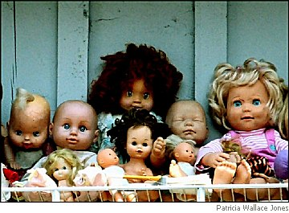

Neil Carpathios
Revealed
Because the doll in the lighted shop window kept staring.
Because the bloody meat hanging from a hook at the butcher’s
dripped as we passed.
Because a little further the mannequin in another window
resembled the doll all grown up.
Because of the buildings, the lampposts, the sewer
and the lack of curtains to hide us —
we started to feel the barb of the hook we hung from
we couldn’t see.

Message
Sometimes you stop in the middle of a moment:
put the book down or just stand in the room
forgetting where you were headed.
Marble-still, you feel like a chandelier
waiting to be lit;
or like a dog whose hearing hears
what you can’t, you lean toward eternity,
straining for the evidence.
Arthritis
Pain in the spine and sides.
My wife diagnoses the problem.
But I’m sure it is ghost birds
who feed on the seeds of every moment I lived
but was not awake to
fluttering behind the bony cage of my ribs.
Inevitable, aging we say.
But the body knows we squander
seconds, minutes, hours, days —
leafing through magazines
full of photos of people
we imagine being,
rich and famous;
or staring at a TV screen;
or driving from point A to point B
to feel we’re getting somewhere —
instead of walking across the room
and taking the one we love in our arms,
looking into their eyes;
or stepping out into cool air
gazing up at clouds,
how they form miracle images
on a giant canvas for us;
or even sitting silently
listening to the heart’s echo
in the deep well of the body
where those birds fill us, fighting,
pecking each other over those seeds —
which hurts inside —
which we name,
thinking we know all about living
and why it hurts to grow old.
Neil Carpathios is the author of two full-length poetry collections: Playground of Flesh (Main Street Rag Press, 2006) and At the Axis of Imponderables (winner of the Quercus Review Press Book Competition, 2007). He is an assistant professor of English at the College of Wooster.
|